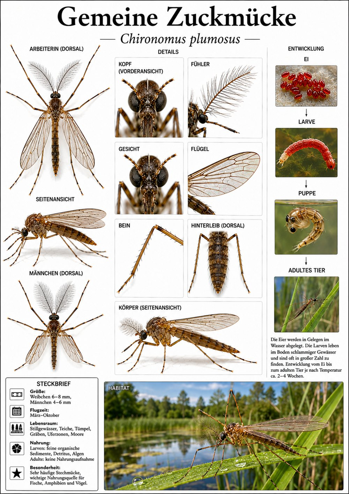

Insekten › Zweiflügler › Zuckmücken

Chironomus plumosus
Sieht aus wie eine Stechmücke, ist aber völlig harmlos: Die Zuckmücke hat keinen Stechrüssel. Die Männchen tragen prächtig gefiederte Fühler und tanzen abends in großen, säulenartigen Schwärmen über Wegen und Gewässern.
Ihre Larven – die bekannten roten „Zuckmückenlarven“ – leben im Schlamm von Teichen und Seen und sind ein wichtiges Fischfutter. Massenhaftes Auftreten der Mücken ist ein Zeichen für ein lebendiges Gewässer.
Naturkundliche Tafel im Stil klassischer Lehrtafeln (teils KI-gestützt erstellt). Der Steckbrief steht auf der Tafel; der Text wurde für Fauna Mibaso verfasst. Schwerpunkt: Verhalten, Ökologie und Kuriositäten.